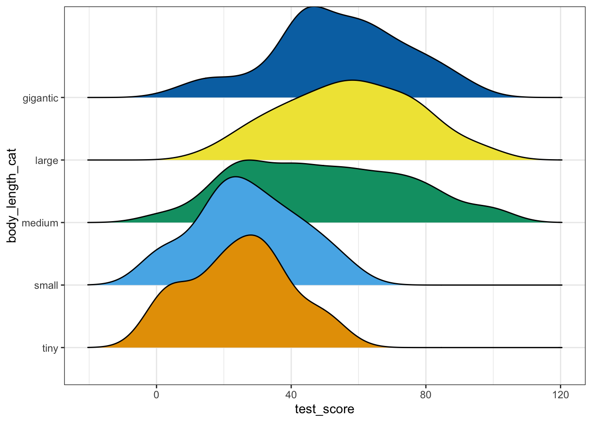
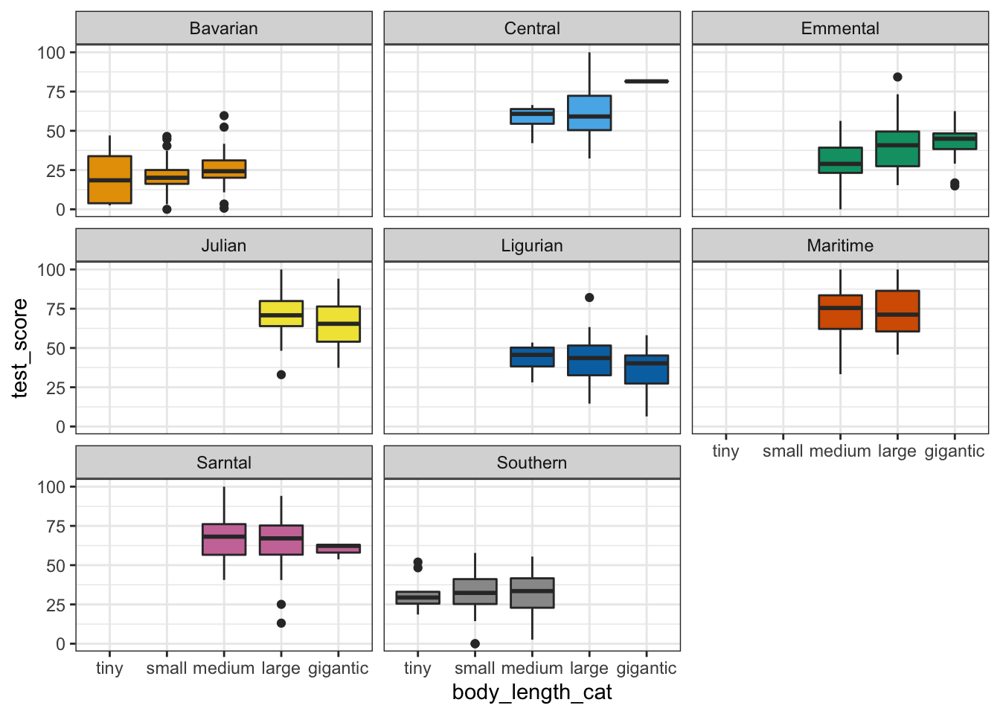
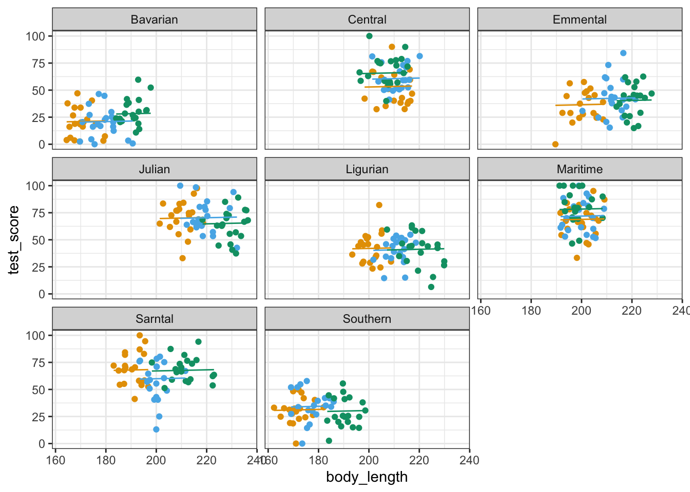
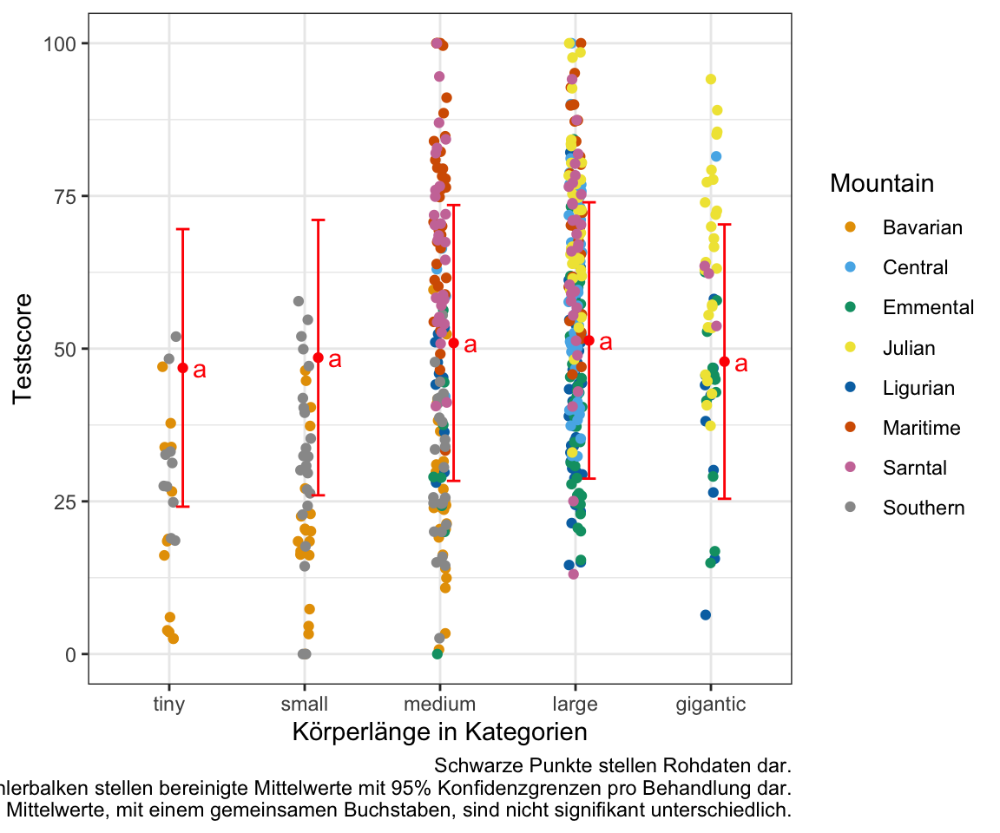

38 Lineare gemischte Modelle
Version vom September 20, 2022 um 17:45:15

Dieses Kapitel basiert auf dem tollen Tutorium von Gabriela K Hajduk. Die Daten und Inhalte wurden von mir angepasst und teilweise gekürzt.
https://m-clark.github.io/mixed-models-with-R/introduction.html
38.1 Genutzte R Pakete für das Kapitel
Wir wollen folgende R Pakete in diesem Kapitel nutzen.
pacman::p_load(tidyverse, magrittr, conflicted, broom, see,
multcomp, emmeans, lme4, broom.mixed,
parameters, ggridges, scales, performance)
conflict_prefer("select", "dplyr")
conflict_prefer("filter", "dplyr")Am Ende des Kapitels findest du nochmal den gesamten R Code in einem Rutsch zum selber durchführen oder aber kopieren.
38.2 Daten
dragons_tbl <- read.csv2("data/dragons.csv") %>%
mutate(body_length_cat = case_when(body_length < 170 ~ "tiny",
body_length >= 170 & body_length < 180 ~ "small",
body_length >= 180 & body_length < 200 ~ "medium",
body_length >= 200 & body_length < 220 ~ "large",
body_length >= 220 ~ "gigantic"),
body_length_cat = as_factor(body_length_cat))dragons_tbl test_score body_length mountain_range site body_length_cat
1 16.15 165.55 Bavarian a tiny
2 33.89 167.56 Bavarian a tiny
3 6.04 165.88 Bavarian a tiny
4 18.84 167.69 Bavarian a tiny
5 33.86 169.96 Bavarian a tiny
6 47.04 168.69 Bavarian a tiny
7 2.56 169.62 Bavarian a tiny
8 3.88 164.42 Bavarian a tiny
9 3.60 167.51 Bavarian a tiny
10 7.36 179.61 Bavarian a small
11 40.40 174.47 Bavarian a small
12 37.79 164.78 Bavarian a tiny
13 22.96 172.56 Bavarian a small
14 3.28 179.00 Bavarian a small
15 18.44 175.97 Bavarian a small
16 16.29 170.82 Bavarian a small
17 20.11 170.05 Bavarian a small
18 20.24 171.09 Bavarian a small
19 26.62 166.96 Bavarian a tiny
20 18.47 169.77 Bavarian a tiny
[ reached 'max' / getOption("max.print") -- omitted 460 rows ]ggplot(dragons_tbl, aes(test_score)) +
geom_histogram() +
theme_bw() `stat_bin()` using `bins = 30`. Pick better value with `binwidth`.
ggplot(dragons_tbl, aes(y = body_length_cat, x = test_score, fill = body_length_cat)) +
theme_bw() +
stat_density_ridges() +
theme(legend.position = "none") +
scale_fill_okabeito() Picking joint bandwidth of 6.8
38.3 Modellierung
lm_fit <- lm(test_score ~ body_length, data = dragons_tbl)
lm_fit %>% model_parameters()Parameter | Coefficient | SE | 95% CI | t(478) | p
----------------------------------------------------------------------
(Intercept) | -61.32 | 12.07 | [-85.03, -37.61] | -5.08 | < .001
body length | 0.55 | 0.06 | [ 0.44, 0.67] | 9.29 | < .001ggplot(dragons_tbl, aes(x = body_length, y = test_score)) +
geom_point() +
geom_smooth(method = "lm") +
theme_bw() +
scale_color_okabeito()`geom_smooth()` using formula 'y ~ x'
augment(lm_fit) %>%
ggplot(aes(x = .fitted, y = .resid)) +
geom_point() +
geom_hline(yintercept = 0, color = "red") +
theme_bw() +
scale_color_okabeito()
ggplot(dragons_tbl, aes(sample = test_score)) +
stat_qq() + stat_qq_line(color = "red") +
theme_bw() +
scale_color_okabeito()
ggplot(dragons_tbl, aes(mountain_range, test_score, fill = mountain_range)) +
geom_boxplot() +
theme_bw() +
theme(legend.position = "none") +
scale_fill_okabeito()
ggplot(dragons_tbl, aes(x = body_length, y = test_score, colour = mountain_range)) +
geom_point() +
theme_bw() +
theme(legend.position = "none") +
scale_color_okabeito()
ggplot(dragons_tbl, aes(body_length, test_score, color = mountain_range)) +
theme_bw() +
geom_point() +
facet_wrap(~ mountain_range) +
scale_color_okabeito()
lm_mountain_fit <- lm(test_score ~ body_length + mountain_range, data = dragons_tbl)
lm_mountain_fit %>% model_parameters()Parameter | Coefficient | SE | 95% CI | t(471) | p
----------------------------------------------------------------------------------
(Intercept) | 20.84 | 14.47 | [-7.60, 49.28] | 1.44 | 0.151
body length | 0.01 | 0.08 | [-0.14, 0.17] | 0.16 | 0.874
mountain range [Central] | 36.58 | 3.60 | [29.51, 43.66] | 10.16 | < .001
mountain range [Emmental] | 16.21 | 3.70 | [ 8.95, 23.47] | 4.39 | < .001
mountain range [Julian] | 45.12 | 4.19 | [36.88, 53.35] | 10.77 | < .001
mountain range [Ligurian] | 17.75 | 3.67 | [10.53, 24.97] | 4.83 | < .001
mountain range [Maritime] | 49.88 | 3.14 | [43.71, 56.05] | 15.89 | < .001
mountain range [Sarntal] | 41.98 | 3.20 | [35.70, 48.26] | 13.13 | < .001
mountain range [Southern] | 8.52 | 2.73 | [ 3.15, 13.89] | 3.12 | 0.002 lmer_1_fit <- lmer(test_score ~ body_length + (1 | mountain_range), data = dragons_tbl)
lmer_1_fit %>% model_parameters()# Fixed Effects
Parameter | Coefficient | SE | 95% CI | t(476) | p
-------------------------------------------------------------------
(Intercept) | 43.72 | 17.14 | [10.05, 77.39] | 2.55 | 0.011
body length | 0.03 | 0.08 | [-0.12, 0.19] | 0.42 | 0.674
# Random Effects
Parameter | Coefficient | SE | 95% CI
--------------------------------------------------------------------
SD (Intercept: mountain_range) | 18.43 | 5.00 | [10.83, 31.36]
SD (Residual) | 14.96 | 0.49 | [14.03, 15.95]lmer_1_fit %>% model_performance()# Indices of model performance
AIC | AICc | BIC | R2 (cond.) | R2 (marg.) | ICC | RMSE | Sigma
----------------------------------------------------------------------------------
3999.203 | 3999.287 | 4015.898 | 0.603 | 5.117e-04 | 0.603 | 14.821 | 14.960augment(lmer_1_fit) %>%
ggplot(aes(x = .fitted, y = .resid)) +
geom_point() +
geom_hline(yintercept = 0, color = "red") +
theme_bw() +
scale_color_okabeito()

lmer_2_fit <- lmer(test_score ~ body_length + (1|mountain_range/site), data = dragons_tbl)
lmer_2_fit %>% model_parameters()# Fixed Effects
Parameter | Coefficient | SE | 95% CI | t(475) | p
-------------------------------------------------------------------
(Intercept) | 40.08 | 21.86 | [-2.88, 83.05] | 1.83 | 0.067
body length | 0.05 | 0.10 | [-0.15, 0.25] | 0.49 | 0.622
# Random Effects
Parameter | Coefficient | SE | 95% CI
-------------------------------------------------------------------------
SD (Intercept: site:mountain_range) | 4.81 | 1.26 | [ 2.87, 8.03]
SD (Intercept: mountain_range) | 18.10 | 5.04 | [10.49, 31.23]
SD (Residual) | 14.44 | 0.48 | [13.53, 15.41]lmer_2_fit %>% model_performance()# Indices of model performance
AIC | AICc | BIC | R2 (cond.) | R2 (marg.) | ICC | RMSE | Sigma
----------------------------------------------------------------------------------
3985.961 | 3986.087 | 4006.829 | 0.628 | 0.001 | 0.627 | 14.144 | 14.442compare_performance(lm_fit, lm_mountain_fit, lmer_1_fit, lmer_2_fit,rank = TRUE)Warning: Following indices with missing values are not used for ranking:
R2_conditional, R2_marginal, ICC, R2, R2_adjusted, AICc_wt# Comparison of Model Performance Indices
Name | Model | RMSE | Sigma | AIC weights | BIC weights | Performance-Score
-------------------------------------------------------------------------------------------
lm_mountain_fit | lm | 14.819 | 14.960 | 1.000 | 0.240 | 78.71%
lmer_2_fit | lmerMod | 14.144 | 14.442 | 9.16e-05 | 0.749 | 75.00%
lmer_1_fit | lmerMod | 14.821 | 14.960 | 1.60e-07 | 0.011 | 46.02%
lm_fit | lm | 21.155 | 21.200 | 6.76e-72 | 3.59e-66 | 0.00%ggplot(dragons_tbl, aes(x = body_length, y = test_score, colour = site)) +
facet_wrap(~mountain_range, nrow=3) +
theme_bw() +
geom_point() +
geom_line(data = cbind(dragons_tbl, pred = predict(lmer_2_fit)), aes(y = pred)) +
theme(legend.position = "none") +
scale_color_okabeito() 
lmer_3_fit <- lmer(test_score ~ body_length_cat + (1 | mountain_range), data = dragons_tbl)
lmer_3_fit %>% model_parameters()# Fixed Effects
Parameter | Coefficient | SE | 95% CI | t(473) | p
----------------------------------------------------------------------------------
(Intercept) | 46.85 | 7.43 | [32.25, 61.45] | 6.30 | < .001
body length cat [small] | 1.68 | 3.89 | [-5.97, 9.33] | 0.43 | 0.666
body length cat [medium] | 4.08 | 3.71 | [-3.20, 11.37] | 1.10 | 0.271
body length cat [large] | 4.49 | 4.27 | [-3.90, 12.88] | 1.05 | 0.293
body length cat [gigantic] | 1.03 | 4.81 | [-8.43, 10.49] | 0.21 | 0.831
# Random Effects
Parameter | Coefficient | SE | 95% CI
--------------------------------------------------------------------
SD (Intercept: mountain_range) | 18.21 | 4.94 | [10.70, 30.98]
SD (Residual) | 14.96 | 0.49 | [14.03, 15.95]
Uncertainty intervals (equal-tailed) and p-values (two-tailed) computed
using a Wald t-distribution approximation.res_lmer <- lmer_3_fit %>%
emmeans(~ body_length_cat) res_lmer_cld <- res_lmer %>%
cld(adjust = "bonferroni", Letters = letters) %>%
tidy() %>%
select(body_length_cat, estimate, conf.low, conf.high, .group) %>%
mutate(across(where(is.numeric), round, 2))
res_lmer_cld # A tibble: 5 × 5
body_length_cat estimate conf.low conf.high .group
<chr> <dbl> <dbl> <dbl> <chr>
1 tiny 46.8 24.1 69.6 " a"
2 gigantic 47.9 25.4 70.3 " a"
3 small 48.5 26.0 71.1 " a"
4 medium 50.9 28.4 73.5 " a"
5 large 51.3 28.7 74.0 " a" ggplot() +
theme_bw() +
geom_jitter(data = dragons_tbl, aes(x = body_length_cat, y = test_score),
width = 0.05) +
geom_text(data = res_lmer_cld,
aes(x = body_length_cat , y = estimate, label = .group),
position = position_nudge(x = 0.2), color = "red") +
geom_errorbar(data = res_lmer_cld,
aes(ymin = conf.low, ymax = conf.high, x = body_length_cat),
color = "red", width = 0.1,
position = position_nudge(x = 0.1)) +
geom_point(data = res_lmer_cld,
aes(x = body_length_cat , y = estimate),
position = position_nudge(x = 0.1), color = "red") +
scale_color_okabeito() +
labs(x = "Körperlänge in Kategorien", y = "Testscore",
caption = "Schwarze Punkte stellen Rohdaten dar.
Rote Punkte und Fehlerbalken stellen bereinigte Mittelwerte mit 95% Konfidenzgrenzen pro Behandlung dar.
Mittelwerte, mit einem gemeinsamen Buchstaben, sind nicht signifikant unterschiedlich.")
res_lmer_tbl <- res_lmer %>%
contrast(method = "pairwise") %>%
tidy(conf.int = TRUE) %>%
mutate(p.value = pvalue(adj.p.value),
across(where(is.numeric), round, 2)) %>%
select(contrast, estimate, p.value,
conf.low, conf.high)
res_lmer_tbl# A tibble: 10 × 5
contrast estimate p.value conf.low conf.high
<chr> <dbl> <chr> <dbl> <dbl>
1 tiny - small -1.68 0.993 -12.3 8.98
2 tiny - medium -4.08 0.807 -14.2 6.09
3 tiny - large -4.49 0.833 -16.2 7.25
4 tiny - gigantic -1.03 >0.999 -14.3 12.2
5 small - medium -2.4 0.935 -10.8 5.99
6 small - large -2.81 0.944 -13.0 7.42
7 small - gigantic 0.65 >0.999 -11.3 12.6
8 medium - large -0.41 >0.999 -6.3 5.48
9 medium - gigantic 3.05 0.862 -5.44 11.5
10 large - gigantic 3.46 0.635 -3.36 10.3 ggplot(res_lmer_tbl, aes(contrast, y=estimate, ymin=conf.low, ymax=conf.high)) +
geom_hline(yintercept=0, linetype="11", colour="grey60") +
geom_errorbar(width=0.1) +
geom_point() +
coord_flip() +
theme_bw() +
labs(x = "Vergleich", y = "Mittelwertsunterschied des Gewichtes [kg/ha]",
caption = "Schwarze Punkte stellen die bereinigten Mittelwertsunterschiede mit 95% Konfidenzgrenzen dar.
Enthält ein 95% Konfidenzintervalle die 0 ist es nicht signifikant unterschiedlich.")38.4 Nested
https://stats.stackexchange.com/questions/228800/crossed-vs-nested-random-effects-how-do-they-differ-and-how-are-they-specified
https://www.statology.org/nested-anova-in-r/